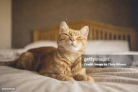

About
I like cat since i was child. Cats conserve energy by sleeping for an average of 13 to14 hours a day. Cats have flexible bodies and teeth adapted for hunting small animals such as mice and rats. A group of cats is called a clowder, a male cat is called a tom, a female cat is called a molly or queen while young cats are called kittens.
